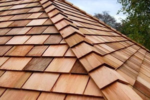

Branford Roofing - Wood Shake Roofs

All roofing materials have pros and cons associated with them, and wood is no exception. But with wood shake roofing, most homeowners find the advantages far outweigh the disadvantages. However, choosing a wood shingle roof is an individual decision where the pros and cons of shingles can vary depending on your individual needs. Some of these needs may be climate, location, the home surroundings in terms of trees and sun exposure, your desired maintenance commitment and, of course, your budget.
The Pros of Wood Shake Roofs
T
here are many more pros to wood roofs than cons. Perhaps the greatest advantage of all is the natural beauty of wood and the way in which it gracefully ages into a beautiful grayish silver tone. In terms of cost-savings, wood is long-lasting, making it an ideal roofing material. Wood lasts at least 10 years longer than common roofing materials, like asphalt. It is also resistant to strong winds and is durable in heavy rains, hail storms, snowstorms and other types of severe storms.
Wood roofs are also energy efficient, providing a natural insulation up to two times that of asphalt shingles. This allows you to conserve home heating and cooling costs, and significantly save on energy bills. Not to be overlooked are the benefits of using an eco-friendly roofing material.
The Cons of Wood Shake Roofs
Cost and maintenance are the only cons to wood shingles and shakes. Compared with other roofing materials, such as the popular asphalt shingles, wooden roofing shingles are more expensive and cost more to install. But when you consider that your home is perhaps the largest investment of your lifetime, it makes sense to top it with a high quality, long-lasting roofing material. Top quality roofing, like wood, comes with a higher price. However, over time, the longevity of wood roofing provides a higher return on investment.
When it comes to roof maintenance, just about all roof types need some form of care to ensure their performance. Wood roofs require regular maintenance to prevent moss, mold and mildew growth. However, there are wood treatment preservatives that can be added during the crafting process to prevent fungal growth and preserve the wood.
You can also arrange for regular inspections and maintenance. Our wood roof maintenance services give you peace of mind that your wood oofing system is being cared for properly. Plus, leaving the maintenance to us gives you one less house chore to do!
Making Your Roofing Decision
Only you can decide whether the advantages of wood roofing outweigh its disadvantages for your home. Of course, Total Exteriors, LLC is at your service to answer any questions you may have or to give you a customized quote for either a wood shake roof or a wood shingle roof.
Total Exteriors, LLC Provides These Detailed Services:
- Asphalt Shingles
- Clay Tile Roofs
- Concrete Tile Roofs
- Metal Roofing
- Slate Roofs
- Wood Shake Roofs
- Flat Roofs
- Gable Roofs
- Hip Roofs
- Membrane Roofs
- Roofing Contractor
- Roofing Contractors
We Provide Roofing in the Following Towns in Connecticut:
Branford Roofing | East Haven Roofing | North Branford Roofing | Guilford Roofing | Madison Roofing | Westbrook Roofing | New London Roofing | Old Saybrook Roofing | Old Lyme Roofing | East Lyme Roofing | Waterford Roofing